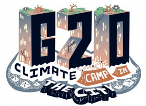

e-Newsletter 8
Turbulence e-Newsletter 8
1) Serbian and Greek Translations of ‘Do You Remember the End of History?’
2) Turbulence @ Berlin ‘We Won’t Pay for Their Crisis’ Demo in March
3) Turbulence on Twitter
4) Turbulence Editor Interviews from G20 Protests
5) New Section on Turbulence Website
6) Spanish Translation of ‘The Movement is Dead, Long Live the Movement!’
7) Turbulence on Facebook
+++++++++++++++++++++++++++++++++++++++++++++++++++++++++
1) SERBIAN AND GREEK TRANSLATIONS OF ‘DO YOU REMEMBER THE END OF HISTORY?’
Serbian and Greek translations of the Turbulence article, ‘Do You Remember the End of History?’, originally written for Mule magazine, are now available. German and Swedish translations have already been previously announced via this email list. The various translations can be found here:
English | German | Swedish | Serbian | Greek.
Other Turbulence translations can be found here.
2) TURBULENCE @ BERLIN ‘WE WON’T PAY FOR THEIR CRISIS’ DEMO IN MARCH
Turbulence were among the publications, extra-parliamentary networks, left-wing groups, trade unions, political parties and others to call for and participate in simultaneous demonstrations in Berlin and Frankfurt on March 28, 2009. The slogan was, ‘We Won’t Pay for Their Crisis’.
{kind=link}
You can read the reports from the event here.
Copies of the following German-language economic crisis Turbulence special, with articles by David Harvie and Christian Frings, distributed at the demonstration can be found here.
3) TURBULENCE ON TWITTER
Turbulence have started using Twitter, the micro-blogging site, to send out regular updates about both our projects and other news. You can visit our site here.
{kind=link}
4) TURBULENCE EDITOR INTERVIEWS FROM THE G20 PROTESTS
Turbulence took part in April’s protests around the G20 meeting in London. Turbulence editor, Tadzio Mueller, was interviewed from the protests by both Deutsche Welle radio and KPFA community radio. The interviews can be listened to via the Turbulence website here.
{kind=link}
5) NEW SECTION ON TURBULENCE WEBSITE
We have opened a new section on the Turbulence website where we will be publishing links to articles elsewhere on the web that we feel resonate with the problematics thrown up by the various issues of Turbulence published so far.
The first text is entitled ‘We won but we lost’ and is an interview with Raquel Gutiérrez. It was originally published by Ukhampacha Bolivia in March 2008. It deals explicitly with the question of winning, which we tried to address in Turbulence 1, in the context of Latin America.
6) SPANISH TRANSLATION OF ‘THE MOVEMENT IS DEAD, LONG LIVE THE MOVEMENT!’
A Spanish translation of Tadzio Mueller’s article, ‘The Movement is Dead, Long Live the Movement’, published in Turbulence 4, has been published by Centre Tricontinental. It can be found here.
{kind=link}
Other translations (as well as the original) are also available in the follow languages:
7) TURBULENCE ON FACEBOOK
 Turbulence now have a Facebook Page. On the page, we’ve set up a series of discussion boards where you can talk about our various issues, room for reviews, and uploaded the artwork from the last three issues. We’ll be announcing (and opening for discussion!) future articles via the page too.
Turbulence now have a Facebook Page. On the page, we’ve set up a series of discussion boards where you can talk about our various issues, room for reviews, and uploaded the artwork from the last three issues. We’ll be announcing (and opening for discussion!) future articles via the page too.
{kind=link}
To become a ‘Fan’ (that’s Facebook’s term, not ours!), log-in to your Facebook account – unfortunately, if you don’t have one, you’ll have to set one up first – and then search for ‘Turbulence: Ideas for movement’. The rest is self-explanatory.
(17 May 2009)
+++++++++++++++++++++++++++++++++++++++++++++++++++++++++++++
www.turbulence.org.uk // www.myspace.com/turbulence_ideas4movement // www.twitter.com/turbulence_mag // editors@turbulence.org.uk
To stay informed about future ‘Turbulence’ publications and projects, subscribe to our (very!) low-traffic e-newsletter here: https://lists.riseup.net/www/info/turbulenceannouncementslist
-
Who we are

Turbulence is a journal/newspaper that we hope will become an ongoing space in which to think through, debate and articulate the political, social, economic and cultural theories of our movements, as well as the networks of diverse practices and alternatives that surround them. Read more here
-
Turbulence on Myspace